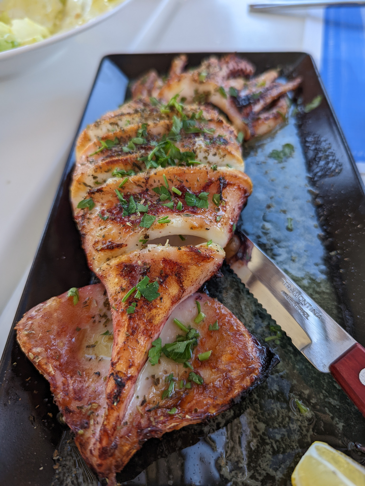
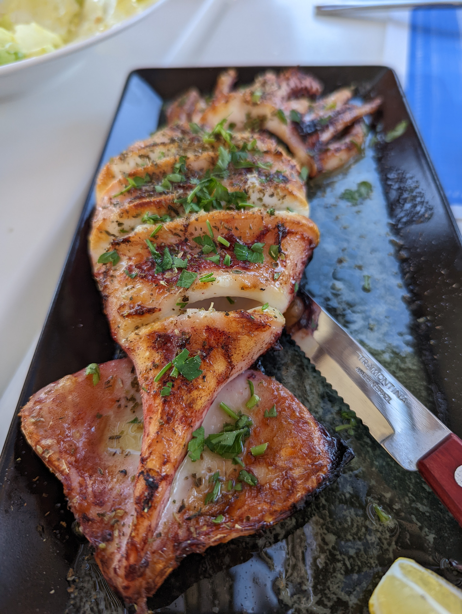
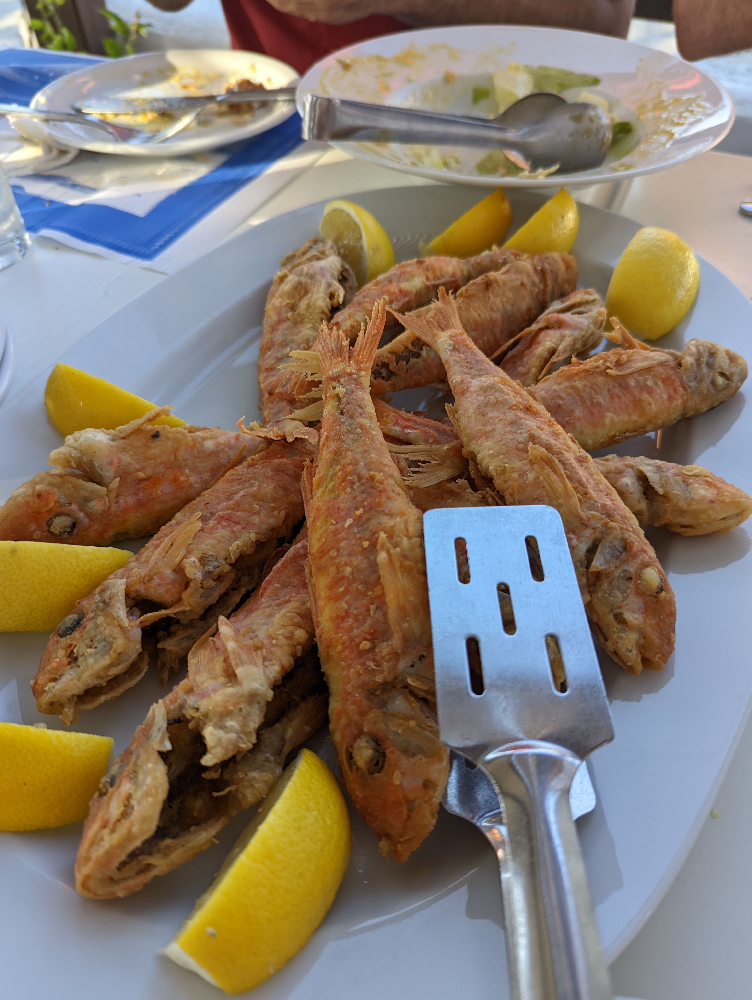
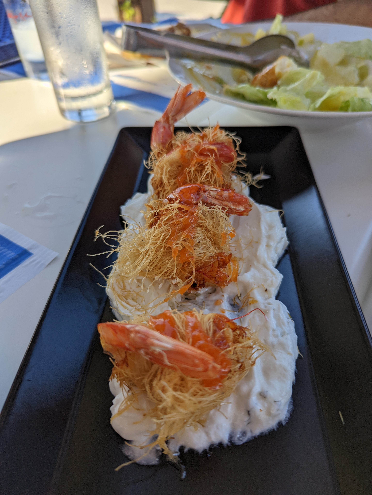

Roasted Squid
Greek roasted squid, known as "kalamari" in Greek cuisine, is a popular and delicious dish that showcases the flavors of the Mediterranean. It's a simple yet flavorful preparation that highlights the natural taste of fresh squid.
Greek seafood is a culinary treasure that reflects the country's rich heritage. Freshness is key in Greek seafood cuisine, with dishes often featuring catch-of-the-day offerings like shrimps, fish or squids. Traditional Greek recipes, such as moussaka or saganaki, showcase the Mediterranean's bounty, incorporating ingredients like plump shrimp, mussels, or hearty portions of feta cheese.
Greek roasted squid, known as "kalamari" in Greek cuisine, is a popular and delicious dish that showcases the flavors of the Mediterranean. It's a simple yet flavorful preparation that highlights the natural taste of fresh squid.
Greek fried anchovies, known as "Gavros Tiganitos" in Greek cuisine, are a popular and flavorful seafood dish. Anchovies are small, oily fish packed with rich flavors, and when prepared in the Greek style, they offer a delightful and crispy eating experience.
Greek roasted shrimp is a delicious and simple seafood dish that's popular in Greek cuisine. It typically features large, juicy shrimp seasoned with Mediterranean flavors and roasted to perfection. “Tzatziki” fits also really well
